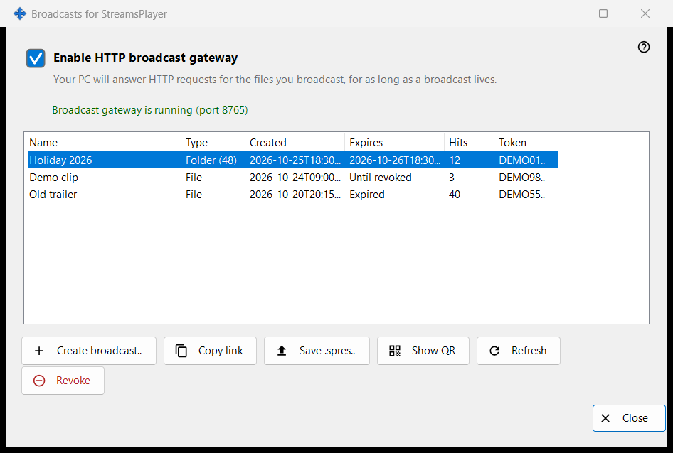
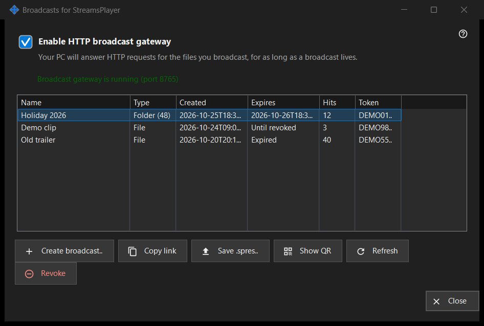

Broadcasts for StreamsPlayer
What this is for
Manages the HTTP broadcasts of media files and folders that this PC offers to the StreamsPlayer app. It opens from the 'Broadcasts..' button or Add-menu item of the Share Manager main window, which appear only when the sharing service reports broadcast support. A launch that carries a path opens it and goes straight to the Create Broadcast dialog for that path.


In this order
- Tick 'Enable HTTP broadcast gateway', or just create a broadcast, which switches the gateway on.
- Press 'Create broadcast..', choose the media file, set the title, lifetime and internet option, and press 'Broadcast'.
- The link is copied to the clipboard.
- Select a row and use 'Copy link', 'Save .spres..' or 'Show QR' to hand the broadcast to a device.
- 'Revoke' a broadcast when it is no longer needed.
The elements
Gateway switch
The checkbox turns the HTTP gateway on or off. The line under it reads 'Broadcast gateway is off' or 'Broadcast gateway is running (port N)'. While the gateway runs, this PC answers HTTP requests for the broadcast files. If the gateway cannot start (port, firewall), the checkbox goes back to its real state and the reason appears in one red line under it; a refusal never opens a dialog.
Broadcast list
Columns: Name, Type (File, or Folder with its item count), Created, Expires (a date, 'Until revoked' or 'Expired'), Hits and Token, which shows only the first six characters. The list re-reads itself every 5 seconds. A double click on a row copies its link.
Create broadcast..
Asks for a media file and opens the Create Broadcast dialog. After you accept it, the gateway is switched on if needed, the broadcast is made and its link is copied to the clipboard with privacy markers; a message confirms the copy.
Refresh and Revoke
'Refresh' is available for a folder broadcast only and asks the service to refresh it; a message confirms. 'Revoke' works on any row and asks first: 'Revoke broadcast X? The link will stop working immediately.' A revoked broadcast cannot be restored; create a new one.
When the page is off
If the sharing service does not answer or lacks broadcast support, the page turns itself off in place and the red line says why, for example that this version of the broadcast service is out of date, or that the action could not be completed with details in the log.
Manager settings · SFTP sharing settings · Exchange server settings